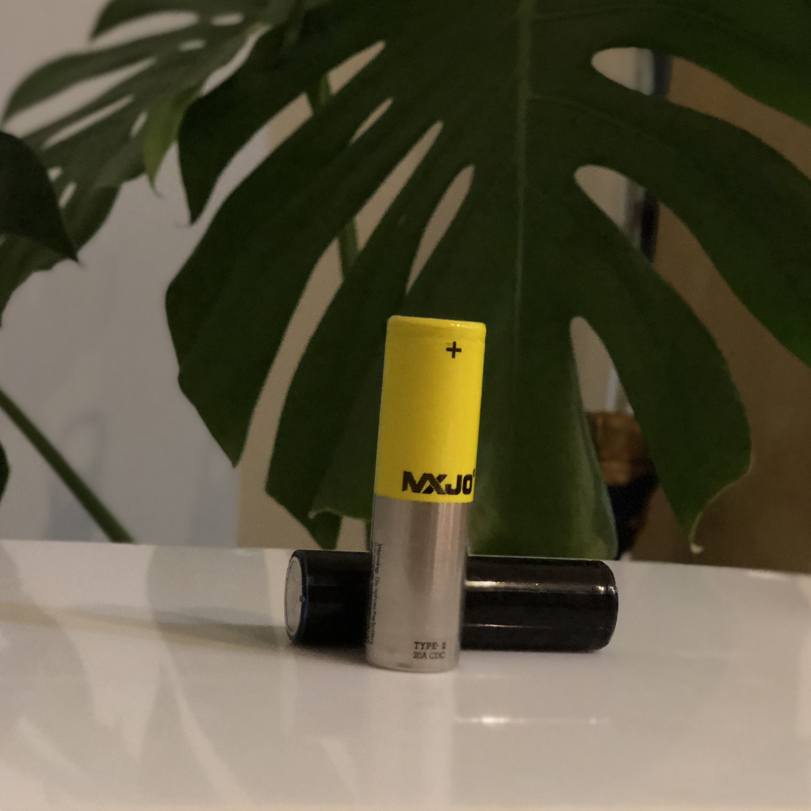
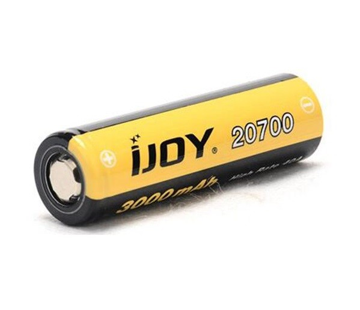
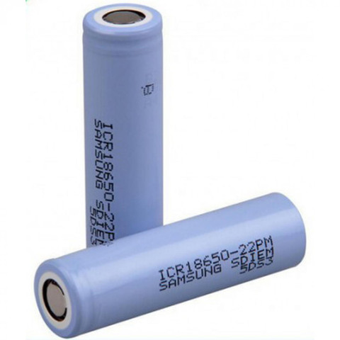

Baterías
La batería es el elemento fundamental que el vaporizador, obviamente necesita para funcionar. Existen baterías de muchos tipos que a continuación explicaremos de una forma clara.
Tipos de baterías
Clasificamos las baterías según el vapeador y las preferencias de rendimiento que le interesa al consumidor. Las más destacadas son las que explicaremos en este post.
Baterías integradas: Existen mods que no disponen de un compartimiento donde el consumidor pueda intercanviar las baterías, o en el respectivo caso extraerlas para aplicarles una carga de energia. Hay mods, (normalmente kits de inicio) que ya incluyen una o varias baterías integradas. Estas baterías no suelen tener el mismo rendimiento que las de tipo 18650 o 20700 ya que suelen tener un tamaño menor y menos capacidad tanto de rendimiento como de carga.
La ventaja principal de estas baterías integradas, es que los mods que las utilizan, suelen utilizar chips especializados para sacarles el mayor rendimiento y la mayor durabilidad de la carga a las mismas.Baterías 20700: Las baterías 20700 se crearon con la llegada de los coches eléctricos y, desde no hace mucho tiempo han llegado al mundo del vapeo. Se caracterizan por tener un mayor número de ciclos de carga y descarga y una mayor intensidad de descarga con respecto a las baterías 18650. Como principal inconveniente decimos que tiene un mayor tamaño que las baterías de tipo 18650, más concretamente un 30%. También hay que recalcar que cuestan el doble que las de tipo 18650, y por desgracia, no dan el doble de rendimiento que las 18650.
Autonomía: 3000mAh. - Protección de descarga: 40A. - Voltaje Nominal: 3.7V. - Voltaje máximo: 4.2V. - Tensión de corte: 2.5V. - Dimensiones: 20.4mm (Diámetro) x 70.1mm (Longitud) - Precio: 10€ ~ 16€.

Baterías 18650: Las baterías de litio de tipo 18650 son las baterías más usadas por su gran rendimiento y durabilidad, ya sea en mods electrónicos como en mods mecanicos. Este tipo de baterías, principalmente por su composición del film, no admiten más intensidad que 3300/3400 mA. Su precio varía evidentemente según su calidad de contrucción y por las diferentes marcas que las distribuyen. Las marcas más reconocidas son Panasonic, Sony y Samsung.
Protección de descarga: 20A - Autonomía: 2500mAh - Voltaje máximo: 3.7V - Baterías 18650 - Tamaño: 64.7mm x 18.10mm | Precio: 2€ ~ 10€.
